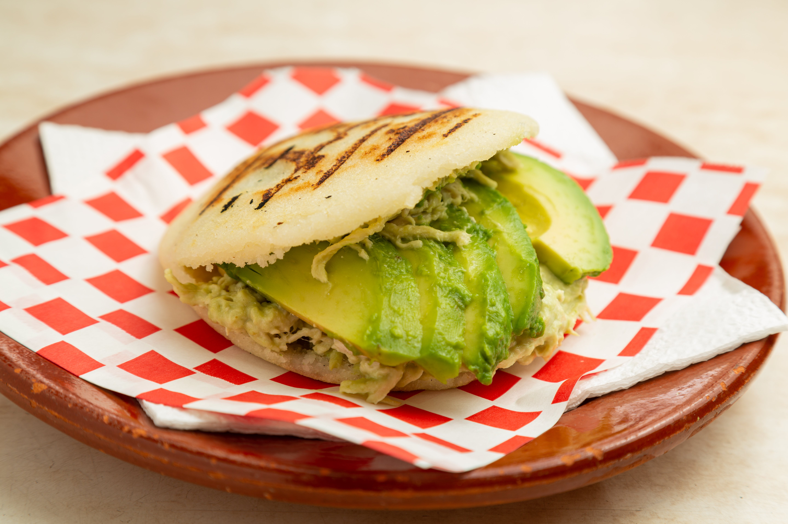

Reina Pepiada

Un clásico venezolano que combina la suavidad del aguacate con el sabor del pollo desmechado. Perfecta para cualquier momento del día.
Ingredientes
- Masa de maíz blanco
- Pollo desmechado
- Aguacate fresco
- Mayonesa casera
- Cilantro y cebolla (opcional)
$3.50
Contáctanos para Ordenar